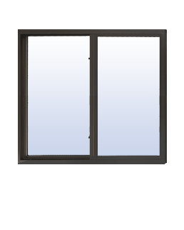
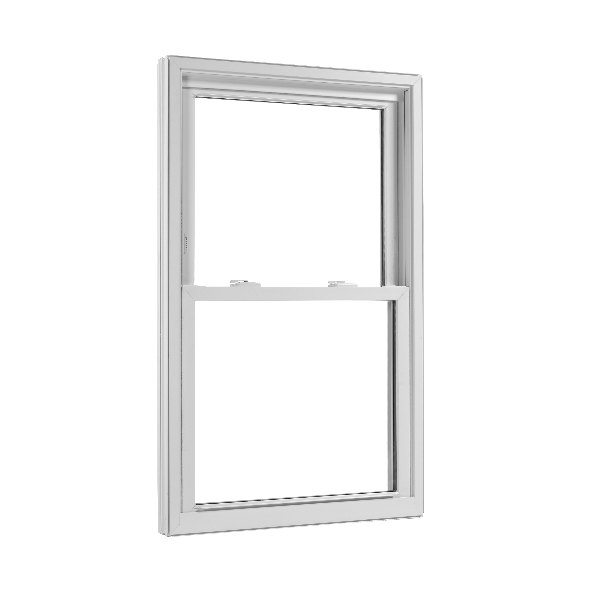

Door Reinforcement
Applying security film to glass greatly enhances its structural integrity...

Glass Reinforcement
Applying security film to glass greatly enhances its structural integrity...

Window Frame Reinforcement
Windows are often considered one of the most vulnerable areas...